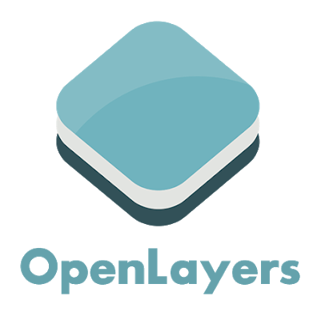

Des interfaces ont été développées pour permettre l’affichage dans différents langages. La bibliothèque a été développé en R par la société RStudio, en python la bibliothèque Follium, ce qui permet également de réaliser des cartes.

MapServer est l’un des premier serveur cartographique apparu sur le marché (1994). A la base il s’agit d’un projet open source (projet ForNet) porté par l’université du Minnesota en collaboration avec la NASA. Aujourd’hui, MapServer est devenu un projet de l’OSGeo et fait parti des serveurs carto les plus performants sur le marché en propose de nombreuses fonctionnalités. Projet totalement open source et développé en C++, il permet de créer des images de cartes géographiques, qui permettent d’orienter les utilisateurs vers du contenu web.
MapServer peut être utilisé principalement de deux manières: 1. Via des APIs appelées MapScript, elles permettent l’utilisation de MapServer directement par une programmation en Python, Java, C et PHP.
La technologie MapServer repose sur un Mapfile qui est l’élément central de l’architecture du serveur cartographique. Il s’agit d’un fichier texte qui définit un certain nombre d’objets garce à un langage balisé propre à MapServer.
Avantages : La plus grande force de MapServer c’est sa robustesse. Elles se ressentent dans les performances puisque MapServer et le serveur carto le plus rapide pour la diffusion de données pour les standards OGC.
Les inconvénients : MapServer ne possède pas d’interface graphique de configuration. La configuration des couches se fait par l’écritutre de Mapfile dans le cadre d’une utilisation en CGI. Par les APIs MapScript, il faut nécessairement utiliser et donc maîtriser les langages de programmation. Dans les deux cas, il faut une phase d’apprentissage avant de pouvoir utiliser MapServer.
lecture de nombreux formats SIG (Tif, COG, SHP, PostGIS, WMS/WFS)
export de données dans plusieurs formats SIG (XML, GML, CSV, SHP/ZIP, tuiles vectorielles)
services et standards de l’OGC : WMS, WFS, WCS, SOS, SLD, OGC API
stylisation avancée
catégorisation des classes vectorielles et rasters
prise en charge des métadonnées Inspire
support multi-platesformes (Linux, Windows, Mac OS X, Solaris, et plus)
une multitude de formats de données raster et vecteur (shapefiles ESRI, PostGIS et Oracle Spatial et de nombreux autres formats via GDAL et OGR)
reprojection de cartes à la volée avec plusieurs milliers de projections grâce à la bibliothèque Proj.4
très bonnes performances avec très peu d’optimisation requise, ce qui en fait un serveur facile à déployer
fichiers texte basés pour la configuration, qui peuvent être facilement poussés dans un dépôt git et divisés en plusieurs fichiers de configuration de carte
Standards de l’Open Geospatial Consortium (OGC) prit en charge dans MapServer : - Web Map Service (WMS) - Web Feature Service (WFS) - Web Coverage Service (WCS) - Filter Encoding (FE) - Styled Layer Descriptor (SLD) - Geography Marhup languge (GML) - Sensor Observation Service (SOS)

Serveur
GeoServer est un serveur informatique4 open source et libre écrit en Java qui permet aux utilisateurs de partager et modifier des données géographiques. Conçu pour l’interopérabilité, il publie les données de toutes les sources principales de données spatiales utilisant des normes ouvertes. Source [wikipédia] (https://fr.wikipedia.org/wiki/GeoServer)
Mapbox GL JS est une librairie Javascript pour la diffusion de cartes sur le web. ## Les formats de données acceptés sont: - Tuiles vectorielles - Tuiles raster - Raster DEM - GeoJSON
On peut également diffuser des images et des vidéos. Il est possible de styliser les cartes en utilisant la librairie de style Mapbox GL ou en créant ses propres styles.

OpenLayers est une bibliothèque JavaScript permettant d’afficher des données cartographiques dans les navigateurs Web sous forme de cartes glissantes
Le principe est simple, pour afficher une carte avec Open Layer, il faut les éléments suivants :
Une page HTML possédant un conteneur (div) qui sera utilisé pour afficher la carte. Un appel à la librairie Open Layer (pour en utiliser les fonctionnalités). Un fichier de configuration (pour personnaliser la carte). Un fichier CSS de mise en forme de la carte.
- CSV
- GeoJSON
- OGR pour les formats SHP ou des flux WFS
- Des tuiles raster et vectorielles
- Des données présentes dans une base de données PostgreSQl,MongoDB, Oracle
- Geopackage
- …
- CREATE, REPLACE, UPDATE, DELETE